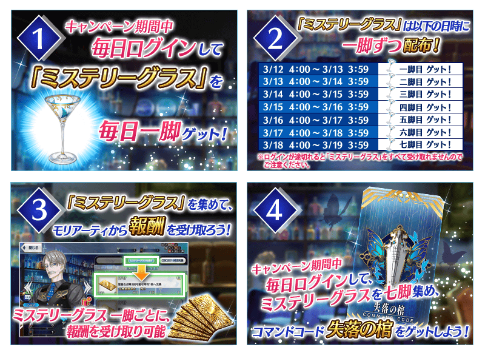
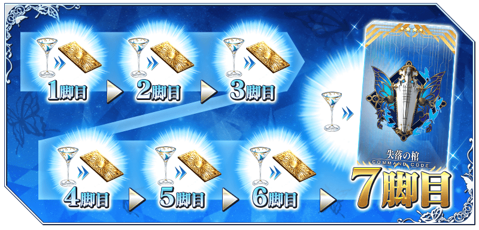
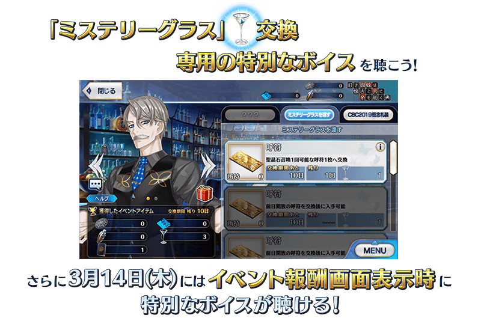
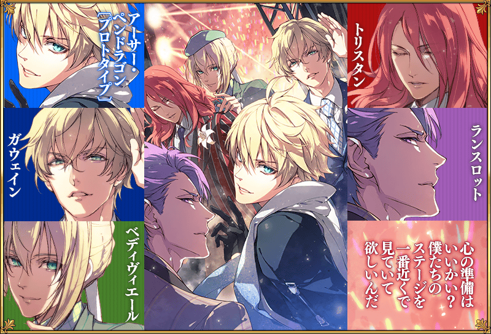
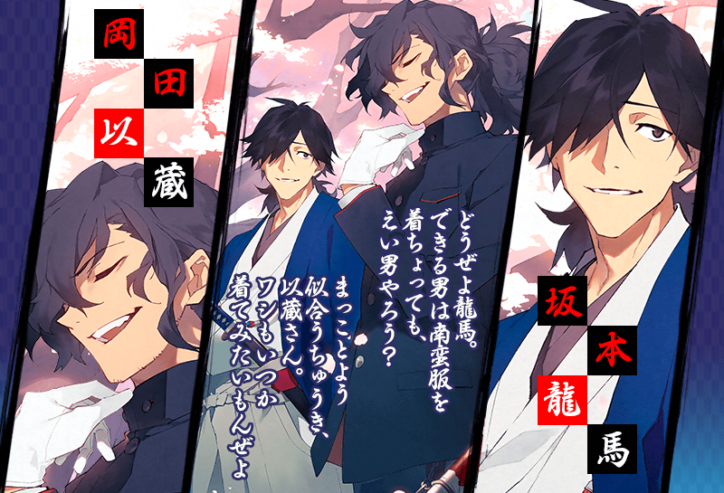
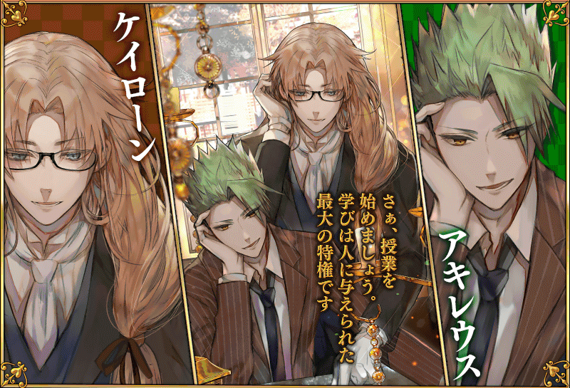

【3月13日(三) 23:00圖片更新】
◆舉辦期間◆
2018年3月11日(一) 17:00～3月19日(二) 11:59
※請注意宣傳活動的舉辦期間與期間限定登入獎勵「懸疑高腳杯」的領取期間相異。
在宣傳活動期間中登入的話，贈送可交換1張「迦勒底男孩收藏2019」期間限定概念禮裝的「CBC2019特別邀請函」！
宣傳活動期間中，可從交換對象概念禮裝之中選擇喜愛的1張交換！
※本頁面圖片皆為開發中。會有與實際圖片有所差異的情況。
◆宣傳活動舉辦期間◆
2019年3月11日(一) 17:00～3月19日(二) 11:59
※請注意「CBC2019特別邀請函」的領取只限上述期間。
◆概念禮裝交換期間◆
2019年3月11日(一) 17:00～3月25日(一) 11:59
※想用「CBC2019特別邀請函」交換贈送對象概念禮裝的話，必須在交換期間內推進至通過「特異點F 炎上汙染都市 冬木」。
◆交換方法◆
2019年3月11日(一) 17:00～3月19日(二) 11:59之間，在最初進行登入時給予「CBC2019特別邀請函」至禮物箱。
從禮物箱領取「CBC2019特別邀請函」的話，管理室(ターミナル)畫面右上的「道具交換」按鍵或達文西工房的「活動道具交換」，能從期間限定概念禮裝9張之中交換喜愛的1張。
※交換後的概念禮裝會送至禮物箱，「CBC2019特別邀請函」會消失。
※請注意就算未交換的情況，在概念禮裝交換期間結束後「CBC2019特別邀請函」也會消失。
◆交換對象◆
※3月13日(三) 23:00修正
在宣傳活動期間中登入的話，每天贈送1杯「懸疑高腳杯」！
每天收集各1杯依序領取報酬的話，靠第7杯的交換得到宣傳活動報酬指令紋章「★4(SR)失落の棺」！
期間中，每天登入來得到豪華報酬吧！
【3月14日(四) 20:30追記】
透過在3月13日(三) 13:40～3月14日(四) AM1:20期間實施的緊急維修所影響，由於產生無法領取「懸疑高腳杯」時間的緣故，領取期間延長至3月21日(四) AM3:59。
伴隨於此，變得在3月12日(二) AM3:00～3月21日(四) AM2:59期間合計登入7天的話，可獲得宣傳活動報酬指令紋章「★4(SR)失落の棺」。
另外，一部份圖片中，會有未變更領取期間的情況。關於這點將依序對應。
抱歉給使用的各位帶來不便。
※本宣傳活動中，會顯示隱藏真名對象Servant的真名。 ※請注意宣傳活動的舉辦期間與「懸疑高腳杯」的領取期間相異。
◆「懸疑高腳杯」的領取條件◆
・所有的Master對象
※新Master玩家必須推進到通過「特異點F 炎上汙染都市 冬木 第3節 進行度1」。
◆「懸疑高腳杯」與報酬的交換條件◆
・通過「特異點F 炎上汙染都市 冬木」
※收集7杯可靠登入獎勵每天各入手1杯「懸疑高腳杯」的話可獲得指令紋章。
◆「懸疑高腳杯」的領取期間◆
2019年3月12日(二) AM3:00～3月19日(二)3月21日(四) AM2:59
※3月14日(四) 20:30修正
◆「懸疑高腳杯」的交換期間◆
2019年3月12日(二) AM3:00～3月25日(一) 11:59
※交換期間結束後「懸疑高腳杯」會消失。
◆宣傳活動報酬指令紋章◆
 |
★★★★SR |


| 特別登入獎勵 實施天數 |
登入時間 | 「懸疑高腳杯」 能交換道具 |
|---|---|---|
| 第1天 | 3月12日(二) AM3:00～ 3月13日(三) AM2:59 |
「懸疑高腳杯」第1杯 呼符 1張 「懸疑高腳杯」第2杯 呼符 1張 「懸疑高腳杯」第3杯 呼符 1張 「懸疑高腳杯」第4杯 呼符 1張 「懸疑高腳杯」第5杯 呼符 1張 「懸疑高腳杯」第6杯 呼符 1張 「懸疑高腳杯」第7杯 ★4(SR)失落の棺 1張 |
| 第2天 | 3月13日(三) AM3:00～ 3月14日(四) AM2:59 |
|
| 第3天 | 3月14日(四) AM3:00～ 3月15日(五) AM2:59 |
|
| 第4天 | 3月15日(五) AM3:00～ 3月16日(六) AM2:59 |
|
| 第5天 | 3月16日(六) AM3:00～ 3月17日(日) AM2:59 |
|
| 第6天 | 3月17日(日) AM3:00～ 3月18日(一) AM2:59 |
|
| 第7天 | 3月18日(一) AM3:00～ 3月19日(二) AM2:59 |
|
| 第8天 | 3月19日(二) AM3:00～ 3月20日(三) AM2:59 |
|
| 第9天 |
3月20日(三) AM3:00～ 3月21日(四) AM2:59 |
※3月15日(五) 17:00修正
※在3月12日(二) AM3:00～3月21日(四) AM2:59期間合計登入7天的話，可獲得宣傳活動報酬指令紋章「★4(SR)失落の棺」。
※請注意未於各登入時間的期間內登入的話無法領取「懸疑高腳杯」。
※交換對象道具各只能領取1次。
※最多能領取7次，根據「懸疑高腳杯」的持有數，可能無法到此上限。
「懸疑高腳杯」的交換方法
「懸疑高腳杯」的交換的交換可自管理室(ターミナル)畫面右上的「道具交換」按鍵或達文西工房的「活動道具交換」交換。
將「懸疑高腳杯」交給新宿的Archer(詹姆斯・莫里亞蒂)來領取的報酬全部有7個，依序交付來領取下個報酬。
請注意最終未滿足7杯「懸疑高腳杯」的話，無法領取所有的報酬。

在「Fate/Grand Order」官方網站內的公告中公開了使用「迦勒底男孩收藏2019」期間限定概念禮裝的插圖來配布使用智慧型手機用的桌布。
下述的期間，點擊「Fate/Grand Order」官方網站內的公告在各圖片下方顯示的按鍵的話，可下載桌布來保存使用。
◆配布期間◆
2019年3月13日(三) 23:00～3月25日(一) 11:59
※開始了壁紙的配布。
※謝絕桌布的再配布、轉載、加工。
※3月13日(三) 23:00修正




※3月13日(三) 23:00修正
在達文西工房的「稀有稜鏡交換」追加下述的新道具。
交換「CBC2018」限定 概念禮裝交換商店的話，會將「CBC2018特別邀請函」送至禮物箱。「CBC2018特別邀請函」可自管理室(ターミナル)畫面右上的「道具交換」按鍵或達文西工房的「活動道具交換」內的「迦勒底男孩收藏2018」，交換「CBC2018」限定的概念禮裝1張。
※想用「CBC2018特別邀請函」交換概念禮裝的話，必須推進至通過「特異點F 炎上汙染都市 冬木」。
◆追加時間◆
2019年3月11日(一) 17:00～
◆追加道具(常駐)◆
| 追加道具 | 能交換次數 | 1次交換所需的 稀有稜鏡數 |
|---|---|---|
| 「CBC2018」限定 概念禮裝交換商店 | 1次 | 3個 |
※在「稀有稜鏡交換」追加的「CBC2018」限定 概念禮裝交換商店做為常駐，沒有交換期限。 ※請注意舉辦「迦勒底男孩收藏2018」時，有使用過「CBC2018特別邀請函」交換禮物履歴的情況無法於達文西工房的「稀有稜鏡交換」交換。
期間限定活動「古老蜘蛛與懐舊共同紡絲」的活動道具交換畫面中，新宿的Archer(詹姆斯・莫里亞蒂)會穿著靈衣登場。
收集活動收集道具的話，也可入手新宿的Archer(詹姆斯・莫里亞蒂)的靈衣開放權。
關於活動的詳情，請自下述橫幅確認。
◆活動舉辦期間◆
2019年3月11日(一) 17:00～3月19日(二) 11:59

其他還有，也Pick Up新宿的Archer(詹姆斯・莫里亞蒂)的期間限定「迦勒底男孩收藏2019Pick Up召喚(每日交替)」同時舉辦！
關於詳情，請自下述橫幅確認。

【3月13日(三) 23:00圖片更新】